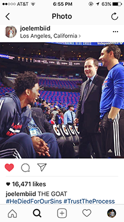
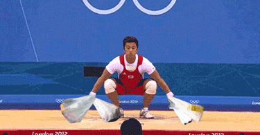

Things I would have asked myself that you might not have asked because you thought it was a stupid question or because you don't know how to contact me...so I asked for you.
Why did you do last name + first name for your domain name instead of first name + last name?
It's a play on words with my name. Zhao in Chinese can also mean find or look for depending on the intonation, so you can read it as “Zhao, Anna” or “looking for Anna?” if you want to include the "me" (technically spelled ma, but same pronunciation, so *shrug*, close enough).
If you don't speak Chinese, you've probly never pronounced my last name correctly, so you can pretend to let it mean whatever you want, since truth doesn't matter anyways.
What's with the hat vs boa thing?
It's a reference to The Little Prince, tied with Harry Potter for one of my favorite books–go read it! If not, I hope you can figure it out from this.
What are your life goals?
Check out Alice Finch's entire album here. The detail is amazing.
(Uncommonish, maybe) Recs?
(Ok so I just wanted more people to appreciate these.)
Books:
Harry Potter is just assumed here. Let's pretend JK Rowling didn't get a parasite in her brain that turned her into a typical boomer.
Movies:
TV:
Podcasts that aren't This American Life/99% Invisible/Radiolab: Believed (NPR), The Dropout, Reply All, The Catch & Kill Podcast
What is something you don't understand?
Why red delicious apples still exist
Wtf does #TrustTheProcess mean?
This is what I think of when I hear the words "the process":
What's the secret to life?
Low expectations
How many watermelons do you usually buy at one go?
It depends on how many I have at home when I go and where I'm living. I like to have one backup at all times, but if I'm living in NYC, just one...because carrying a watermelon is a both arm exercise. I'm not trying to be like this guy.
Can you get diabetes from eating too much watermelon?
Wait this is a stupid question that I wanted answered.
Why does each page have a different look to it? The incongruity is disconcerting.
Yeaaa, so I made this myself and basically, I design things like Homer makes cars...At least I was broke to start with, so no harm done.
Are you going to remake your site?
This was one of the first things I made when I was learning how to build websites, so it's kind of nice to see how far I've come.
Why didn't you just use Squarespace? Seriously, the incongruity is disconcerting.
Life Rule #3. Don't pay for things that you don't need to pay for.
I really like the font.
That's not a question, but thank you. I spent a lonnng time debating between this and Oxygen and consulting un-paid font snob friends. I'm so glad you noticed. It's good to know it wasn't a total waste of time.
I don't like the font.
Go to the I'm hungry and photos pages and look at the pictures then?
Where is an email to contact you?
Uh you can message me on IG? @annazhaopian
That was fun, who should I stalk next?
{kind=link}
{kind=link}